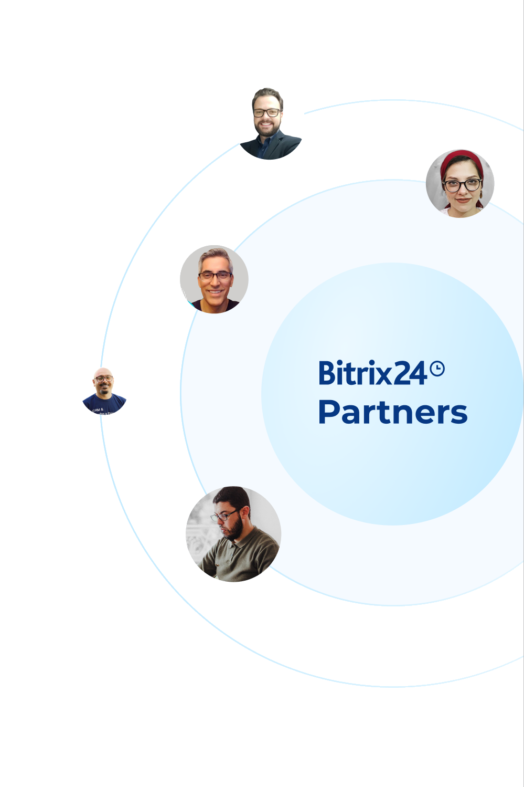
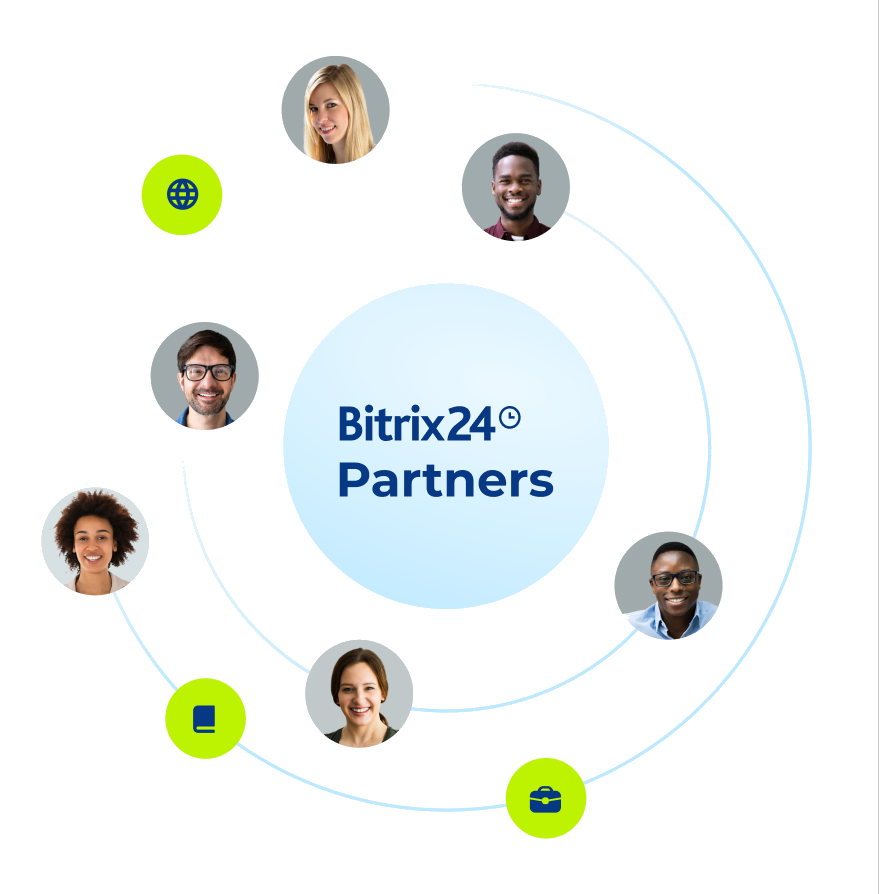

Success Stories
We sat down with Michael Chandra, the director of Askarasoft (a Bitrix24 Gold Partner in Indonesia), to talk about their path to success and how they managed to increase their revenue tenfold.
How long have you been
a Bitrix24 partner?
We have been a Bitrix24 partner since 2017, so it is our 8th year now.
What motivated you to become a Bitrix24 partner?
We found Bitrix24, which has a lot of comprehensive features and flexibility in terms of customization. We think that this is the best solution to compete with other players.
How did you start selling Bitrix24 to your clients?
We started by building marketing materials on our social media and creating a landing page. At that time, as we were strict on budget, we didn't put on ads. We relied only on SEO and social media marketing.
However, it turned out the response was good, and due to the extremely wide range of features Bitrix24 has (compared to even pricier competitors), the clients preferred our solution.
Clients also liked the on-premise solution as it offers more flexibility, and some local regulations mandate that servers must be in Indonesia.
However, since Bitrix24 does not have as much brand power and recognition as some of its competitors, we needed to convince the prospects by providing trials and assisting them during the trial period.
Which tools and resources from our company have been most useful for you?
Bitrix24 Battlecards, implementation methodology, video training, and marketing training have been very useful for us. We also use the Bitrix24 blog/partner portal to get updates on the latest information on the Bitrix24 platform.
Full set of training materials
How is your process of attracting new clients structured now?
We have a dedicated marketing team to promote our solution through regular webinars, social media, LinkedIn, paid ads, and SEO. We built our branding as a Bitrix24 professional implementer by sharing case studies and success stories on social media. Through YouTube, we provide tutorials on Bitrix24 to build our credentials.
We also promote Bitrix24 not only as a CRM but also as a Document Management System, project management tools, compliance management system, etc., which enables us to reach more markets.
We have a team to approach clients directly through LinkedIn. In addition to that, we use other channels, such as paid ads (Google/Facebook/Instagram), email marketing (to regularly update clients on the latest trends), and SEO (finding good keywords to improve our rankings).
Finally, we also attend offline events to spread the word about the Bitrix24 platform. Plus, we cooperate with local system integrators to provide solutions to their clients.

What results have you achieved during your cooperation with us?
and increased the number of employees by 7x since we started selling the Bitrix24 platform in 2017. We were also awarded as Bitrix24 Best Enterprise seller in 2021. Our customer base has grown, and we get a lot more projects through Bitrix24 implementation.
What impact has our partnership had on your business?
Partnership with Bitrix24 opens up a lot of opportunities. We managed to secure larger client deals, find new opportunities, and increase our revenue after partnering with Bitrix24.
What are the main advantages you see in partnering with Bitrix24?
Bitrix24 has a supportive team to help us in understanding the product.
How satisfied are you with our partnership overall?
9 out of 10. It is almost perfect.

What mistakes did you make in the beginning and how can they be avoided?
Bitrix24 has a lot of features, and our first project was not perfect because we were too excited about selling a new tool. We didn't follow the best practices of project implementation, and our team was not ready yet to understand all the features. The first project took quite long to implement, and the feature usage was only 10% because we were not sharing enough with the customer.
What advice would you give to new partners who are just starting to work with us?
Start learning from the Bitrix24-provided material. It is very helpful for your first project. I have an overseas client who worked with another partner and switched to us due to the lack of product knowledge, thus they could not offer the best solution. Bitrix24 already provides great marketing and training material, so please study them.
Awards:

Sign up for the Bitrix24 Partner Program!
Sign up